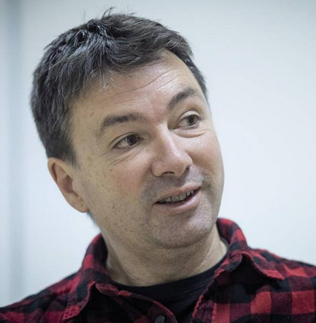
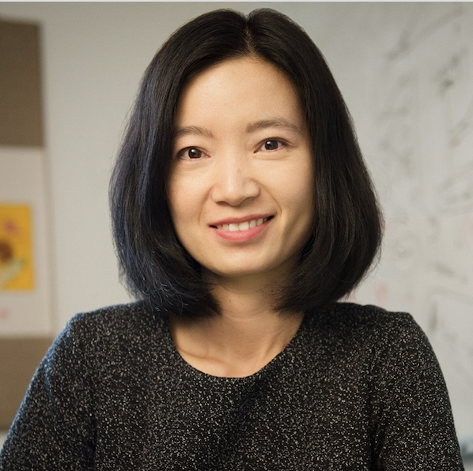
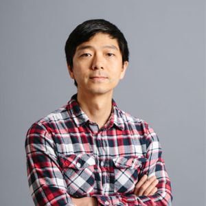
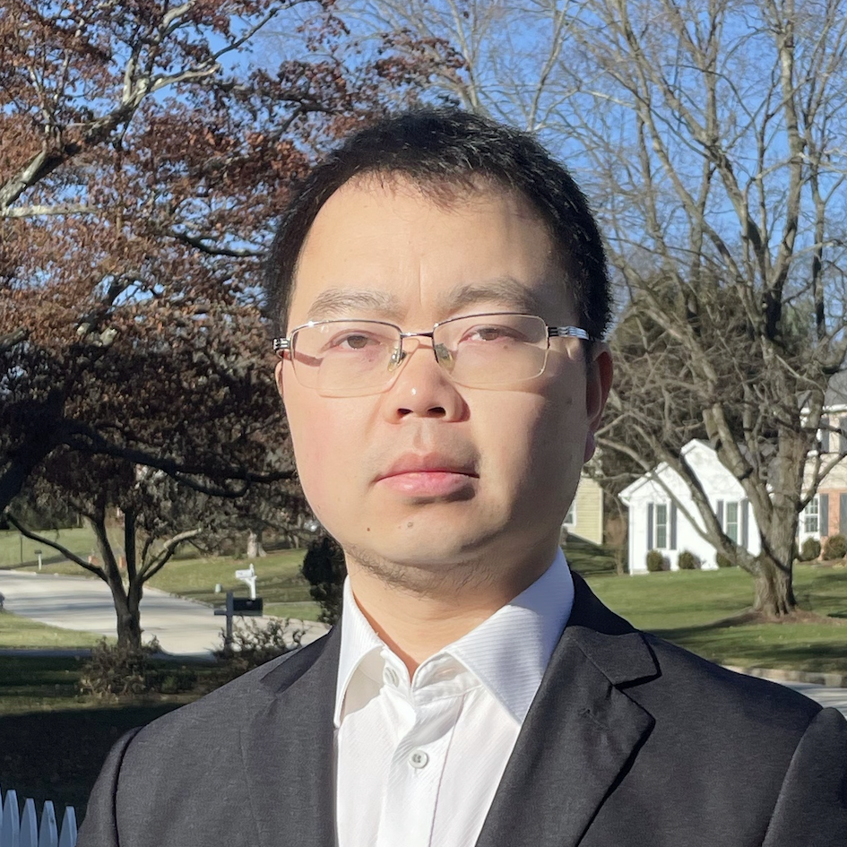
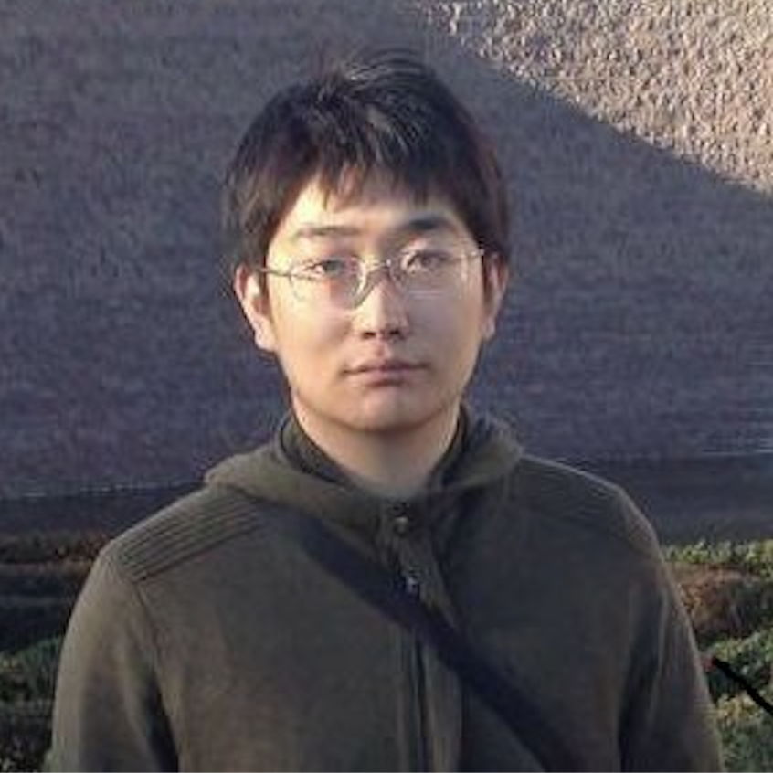
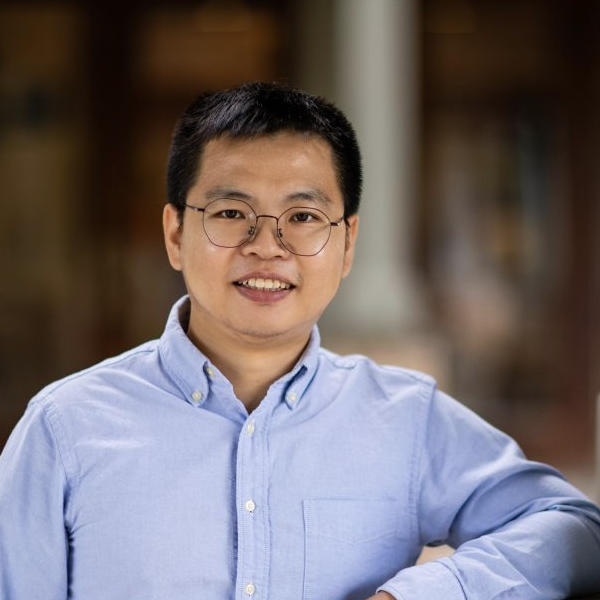
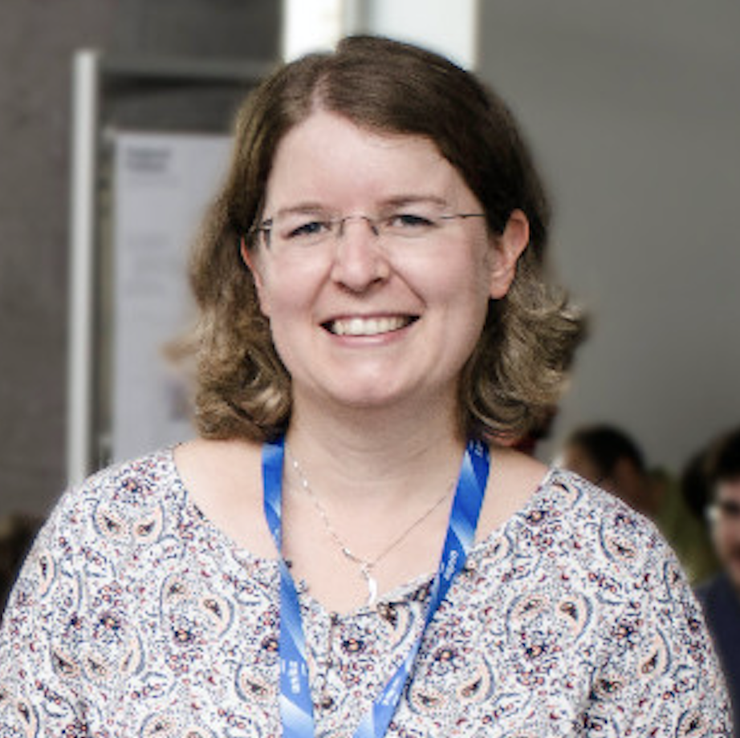

Overview
Knowledge extraction (KE) was mainly driven by task-specific human annotations. Recent years have seen an increasing interest in KE with WISE supervision (Weak supervision, Indirect supervision, SElf-supervision, etc.). This workshop aims to provide a forum for researchers and practitioners from broad communities, such as information extraction (IE), knowledge graphs (KG), semantic web, and transfer learning, etc., to discuss the challenges and promises of KE when human annotations are limited.
Wise-Supervision 2022 aims to bring together researchers from different areas related to KE. As such, the workshop welcomes and covers a wide range of topics, including (non-exclusively):
- IE/KE with indirect supervision from textual entailment, summarization, etc.
- IE/KE with weak supervision and denoising.
- IE/KE with self-supervision, e.g., pretrained LMs for IE/KE.
- KG construction and consolidation.
- Low-resource IE/KE.
- KE in industry settings.
Contact: wenpeng.yin@temple.edu
Call for papers
We invite submissions that are flexibly aligned with the above topics. Since the workshop is non-archival, concurrent submissions to other venues, as well as accepted work, are allowed. Accepted work will be presented as oral during the workshop and listed on this website. At least one of the authors of each accepted submission will be required to present the work virtually.
- Paper: 8 pages + reference
- Paper: 4 pages + reference
- Extended abstract: 1 page + reference
Registration
TBD
Important Dates
- Oct. 16: Paper submission deadline (extended 1 day as required)
- Oct. 20: Notification of acceptance
- Nov. 5: Workshop
All deadlines are 11.59 pm UTC -12h (“anywhere on Earth”).
Invited Speakers
|
Prof. Heng Ji |

Prof. Eneko Agirre |

Prof. Yizhou Sun |

Dr. Hoifung Poon |
We will also have a panel discussion with speakers.
Schedule
| Event | London time | Speaker's local time |
|---|---|---|
| Opening speech | 14:00-14:05 pm (5 mins) | |
| Keynote by Prof. Eneko Agirre | 14:05-14:45 pm (40mins) | 15:05-15:45 pm |
| Keynote by Prof. Heng Ji | 14:05-14:45 pm (40mins) | 09:50-10:30 am |
| Coffee break | 15:30-16:00 pm (30mins) | |
| Keynote by Dr. Hoifung Poon | 16:00-16:40 pm (40 mins) | 09:00-09:40 am |
| Keynote by Prof. Yizhou Sun | 16:40-17:20 pm (40 mins) | 09:40-10:20 am |
| Accepted paper "KnowPrompt: Knowledge-aware Prompt-tuning with Synergistic Optimization for Relation Extraction" by Xiang Chen, Ningyu Zhang, Xin Xie, Shumin Deng, Yunzhi Yao, Chuanqi Tan, Fei Huang, Luo Si | 17:20-17:28 pm (8 mins) | |
| Accepted paper "SepLL: Separating Latent Class Labels from Weak Supervision Noise" by Andreas Stephan, Vasiliki Kougia, Benjamin Roth | 17:28-17:36 pm (8 mins) | |
| Accepted paper "OpenStance: Real-world Zero-shot Stance Detection" Hanzi Xu, Slobodan Vucetic, Wenpeng Yin | 17:36-17:44 pm (8 mins) | |
| Accepted paper "Cross-Lingual Speaker Identification Using Distant Supervision" Ben Zhou, Dian Yu, Dong Yu, Dan Roth | 17:44-17:52 pm (8 mins) | |
| Accepted paper "Towards Improved Distantly Supervised Multilingual Named-Entity Recognition for Tweets" by Ramy Eskander, Shubhanshu Mishra, Sneha Mehta, Sofia Samaniego, Aria Haghighi | 17:52-18:00 pm (8 mins) | |
| Closing Remarks | 18:00-18:10 pm (10 mins) |
Organizing Committee
|

Wenpeng Yin |

Muhao Chen |

Lifu Huang |

Huan Sun |
Hongming Zhang |
Benjamin Roth |

Barbara Plank |